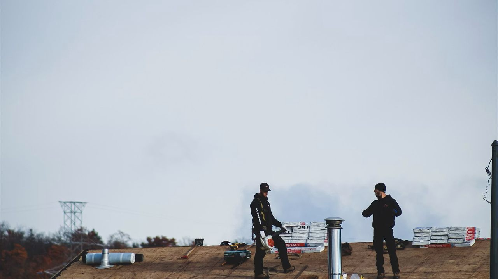
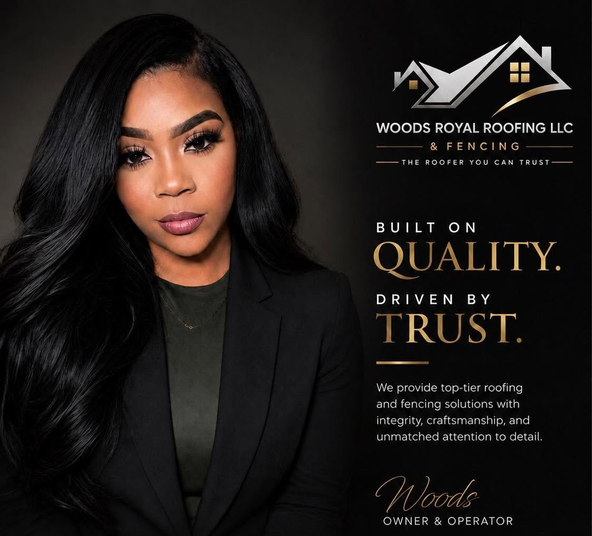
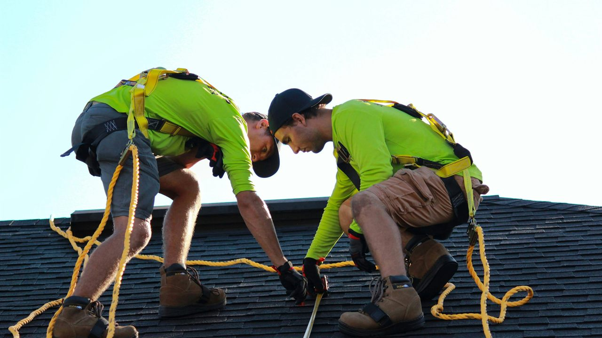
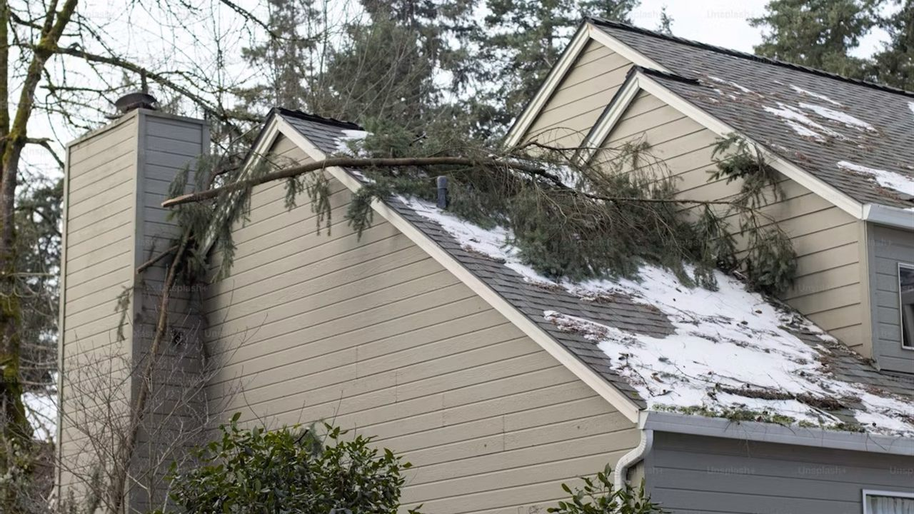
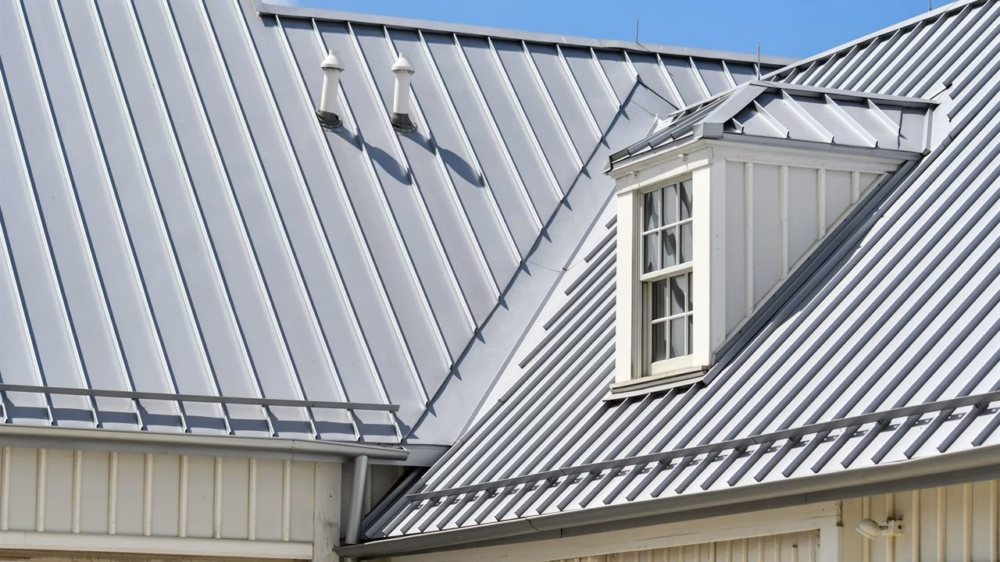
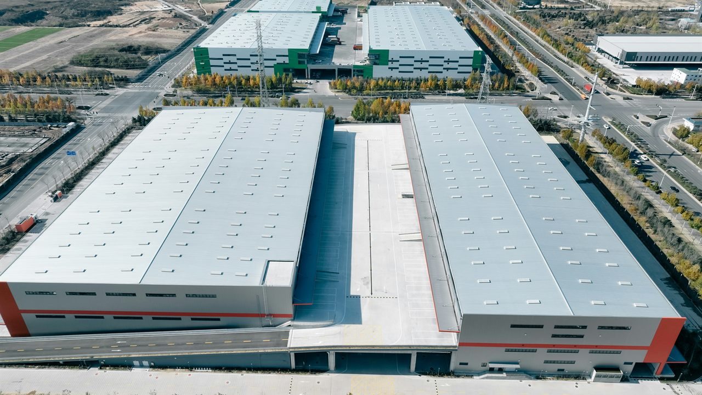

Roof Replacement
A beautiful new roof, installed right. We tear off, inspect the decking, and install quality materials built to protect your home for decades.
Woods Royal Roofing LLC is a woman-owned roofing company serving Austin, Round Rock, Georgetown, Cedar Park, Pflugerville, Hutto, and the surrounding areas. From roof repairs to full replacements, we are the roofer you can trust.

Woods Royal Roofing LLC is built on quality and driven by excellence. We believe a roof over your family's head deserves honest answers, fair pricing, and workmanship that holds up to Texas weather year after year.
Every project starts with a free inspection and a straight conversation about what your roof actually needs. If a repair will do the job, we will tell you. If it is time for a replacement, we will walk you through it, including the insurance claim.
From a missing shingle to a brand new roof on new construction, Woods Royal handles it with quality work and honest prices.

A beautiful new roof, installed right. We tear off, inspect the decking, and install quality materials built to protect your home for decades.

Signs of age, missing shingles, or a stubborn leak? Don't wait until a small problem becomes a costly repair. We fix it fast and fix it right.

Hail, wind, and Central Texas storms are hard on roofs. We inspect, document the damage, and restore your roof before it gets worse.

Filing a roof claim can feel overwhelming. We work with your insurance company and guide you through the process from inspection to approval.

Building new? We install roofing systems on new construction with clean lines, proper ventilation, and materials matched to your build.

Apartments, townhomes, and commercial properties need a roofer who can handle scale. We manage multi-family and commercial projects start to finish.

It is right there in our name. Woods Royal Roofing LLC & Fencing installs and repairs fencing with the same quality work and honest prices we bring to every roof.
Whether your fence took storm damage alongside your roof or it is simply time for a new one, we can handle both in one project, with one crew you already trust.
We inspect your roof, document what we find, and give you honest answers. No pressure, no scare tactics.
You get straight, honest pricing in writing. Repair or replacement, you will know exactly what it costs and why.
If storm damage qualifies for a claim, we assist with your insurance company through the whole process.
Our crew installs with quality workmanship, cleans up completely, and walks the finished work with you.
Roofs and fences we have completed around Austin and the surrounding communities.
Neighbors on Facebook recommend us 100% of the time, and we work hard to keep it that way on every single job.
Woods Royal is proudly woman owned and committed to excellence. You deal directly with an owner who cares about how the work reflects on her name.
Free inspections, straight answers, and honest pricing in writing. If your roof does not need replacing, we will be the first to tell you.
Storm damage claims are stressful. We document everything and work with your insurance company so the process stays off your plate.
Is your roof showing signs of age, storm damage, or missing shingles? Don't wait until a small problem becomes a costly repair. Call Woods Royal Roofing LLC today for a free roof inspection.